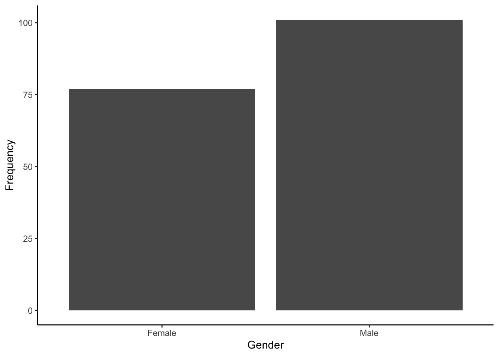

15 Analysis Journey 1: Data Wrangling
Welcome to the first data analysis journey. We have designed these chapters as a bridge between the structured learning in the core chapters and your assessments. We present you with a new data set, show you what the end product should look like, and see if you can apply your data wrangling, visualisation, and/or analysis skills to get there.
As you gain independence, this is the crucial skill. Data analysis is all about seeing the data you have available to you and identifying what the end product needs to be to apply your visualisation and analysis techniques. You can then mentally (or physically) create a checklist of tasks to work backwards to get there. There might be a lot of trial and error as you try one thing, it does not quite work, so you go back and try something else. If you get stuck though, we have a range of hints and task lists you can unhide, then the solution to check your attempts against.
In this first data analysis journey, we focus on data wrangling to apply all the skills you developed from Chapter 1 to Chapter 6.
15.1 Task preparation
15.1.1 Introduction to the data set
For this task, we are using open data from Bartlett et al. (2022). The abstract of their article is:
Both daily and non-daily smokers find it difficult to quit smoking long-term. One factor associated with addictive behaviour is attentional bias, but previous research in daily and non-daily smokers found inconsistent results and did not report the reliability of their cognitive tasks. Using an online sample, we compared daily (n = 106) and non-daily (n = 60) smokers in their attentional bias towards smoking pictures. Participants completed a visual probe task with two picture presentation times: 200ms and 500ms. In confirmatory analyses, there were no significant effects of interest, and in exploratory analyses, equivalence testing showed the effects were statistically equivalent to zero. The reliability of the visual probe task was poor, meaning it should not be used for repeated testing or investigating individual differences. The results can be interpreted in line with contemporary theories of attentional bias where there are unlikely to be stable trait-like differences between smoking groups. Future research in attentional bias should focus on state-level differences using more reliable measures than the visual probe task.
To summarise, they compared two daily and non-daily smokers on something called attentional bias. This is the idea that when people use drugs often, things associated with those drugs grab people’s attention.
To measure attentional bias, participants completed a dot probe task. This is a computer task where participants see two pictures side-by-side: one related to smoking like someone holding a cigarette and one unrelated to smoking like someone holding a fork. Both the images disappear and a small dot appears in the location of one of the images. Participants must press left or right on the keyboard to identify where the dot appeared. This process is repeated many times for different images, different locations of the dot, and different durations of showing the images. The idea is if smoking images grab people’s attention, they will be able to identify the dot location faster on average when it appears in the location of the smoking images compared to when it appears in the location of the the non-smoking images.
Response time tasks like this are incredibly common in psychology and cognitive neuroscience, and being able to wrangle hundreds of trials is a great demonstration of your new data skills. After setting up your files and project for the chapter, we will outline the kind of problems you are trying to solve.
15.1.2 Organising your files and project for the task
Before we can get started, you need to organise your files and project for the task, so your working directory is in order.
In your folder for research methods and the book
ResearchMethods1_2/Quant_Fundamentals, create a new folder for the data analysis journey calledJourney_01_wrangling. WithinJourney_01_wrangling, create two new folders calleddataandfigures.Create an R Project for
Journey_01_wranglingas an existing directory for your chapter folder. This should now be your working directory.Create a new R Markdown document and give it a sensible title describing the chapter, such as
Analysis Journey 1 - Data Wrangling. Delete everything below line 10 so you have a blank file to work with and save the file in yourJourney_01_wranglingfolder.We are working with data separated into two files. The links are data file one (Bartlett_demographics.csv) and data file two (Bartlett_trials.csv). Right click the links and select “save link as”, or clicking the links will save the files to your Downloads. Make sure that both files are saved as “.csv”. Save or copy the file to your
data/folder withinJourney_01_wrangling.
You are now ready to start working on the task!
15.2 Overview
15.2.1 Load tidyverse and read the data files
Before we explore what wrangling we need to do, load
You should have the following in a code chunk:
15.2.2 Explore demog and trials
The data from Bartlett et al. (2022) is split into two data files. In demog, we have the participant ID (participant_private_id) and several demographic variables.
Rows: 205
Columns: 20
$ participant_private_id <dbl> 631737, 631738, 631741, 631739, 631749, 631746,…
$ consent_given <dbl> 1, 1, 1, 1, 1, 1, 1, 1, 1, 1, 1, 1, 1, 1, 1, 1,…
$ age <dbl> 46, 54, 23, 34, 38, 19, 25, 21, 28, 35, 47, 45,…
$ cigarettes_per_week <chr> "Yes", "Yes", "Yes", "Yes", "Yes", "Yes", "Yes"…
$ smoke_everyday <chr> "Yes", "Yes", "Yes", "Yes", "Yes", "Yes", "Yes"…
$ past_four_weeks <chr> "Yes", "Yes", "Yes", "Yes", "Yes", "Yes", "Yes"…
$ age_started_smoking <chr> "12", "17", "17", "16", "15", "16", "22", "11",…
$ country_of_origin <chr> "United Kingdom", "Germany", "Poland", "Austral…
$ cpd <chr> "6", "5", "10", "20", "10", "1", "6", "15", "12…
$ ethnicity <chr> "White / Caucasian", "White / Caucasian", "Mixe…
$ gender <chr> "Female", "Female", "Male", "Female", "Female",…
$ last_cigarette <chr> "60", "780", "90", "5", "60", "720", "10", "10"…
$ level_education <chr> "Graduated University / College", "Graduated Un…
$ technical_issues <chr> "No", "No", "No", "No", "No", "No", "No", "No",…
$ FTND_1 <dbl> 2, 0, 0, 3, 3, 0, 1, 2, 1, 3, 2, 2, 2, 1, 2, 0,…
$ FTND_2 <dbl> 0, 0, 0, 0, 0, 0, 0, 1, 0, 0, 1, 1, 0, 1, 0, 0,…
$ FTND_3 <dbl> 1, 0, 1, 1, 1, 1, 1, 0, 1, 1, 1, 0, 1, 0, 1, 0,…
$ FTND_4 <dbl> 0, 0, 1, 1, 0, 1, 1, 0, 0, 0, 1, 1, 1, 0, 1, 1,…
$ FTND_5 <dbl> 0, 0, 0, 1, 1, 1, 0, 1, 1, 1, 1, 0, 1, 1, 0, 0,…
$ FTND_6 <dbl> 0, 0, 0, 1, 0, 0, 0, 1, 1, 1, 1, 1, 1, 0, 0, 0,…The columns (variables) we have in the data set are:
| Variable | Type | Description |
|---|---|---|
| participant_private_id | double | Participant number. |
| consent_given | double | 1 = informed consent, 2 = no consent. |
| age | double | Age in Years. |
| cigarettes_per_week | character | Do you smoke every week? Yes or No. |
| smoke_everyday | character | Do you smoke everyday? Yes or No. |
| past_four_weeks | character | Have you smoked in the past four weeks? Yes or No. |
| age_started_smoking | character | Age started smoking in years. |
| country_of_origin | character | Country of origin. |
| cpd | character | How many cigarettes do you smoke per day? |
| ethnicity | character | What is your ethniciity? |
| gender | character | What is your gender? |
| last_cigarette | character | How long in minutes since your last cigarette? |
| level_education | character | What is your highest level of education? |
| technical_issues | character | Did you experience any technical issues? Yes or No |
| FTND_1 to FTND_6 | double | Six items of the Fagerstrom Test for Nicotine Dependence |
In trials, we then have the participant ID (participant_private_id) and trial-by-trial information from the software Gorilla (an online experiment service). This is probably the biggest data set you have come across so far as we have hundreds of trials per participant.
Rows: 244,847
Columns: 15
$ participant_private_id <dbl> 631737, 631737, 631737, 631737, 631737, 631737,…
$ trial_number <chr> "BEGIN TASK", "1", "1", "1", "1", "2", "2", "2"…
$ reaction_time <dbl> NA, 8007.015, 249.823, 199.765, 1999.671, 249.8…
$ response <chr> NA, NA, NA, NA, NA, NA, NA, NA, NA, NA, NA, NA,…
$ correct <dbl> 0, 0, 0, 0, 0, 0, 0, 0, 0, 0, 0, 0, 0, 0, 0, 0,…
$ display <chr> NA, "instructions", "practice", "practice", "pr…
$ answer <chr> NA, NA, "right", "right", "right", "left", "lef…
$ soa <dbl> NA, NA, 200, 200, 200, 200, 200, 200, 500, 500,…
$ screen_name <chr> NA, "instructions_continue", "Screen 1", "Scree…
$ image_left <chr> NA, NA, "p1.jpg", "p1.jpg", "p1.jpg", "p1.jpg",…
$ image_right <chr> NA, NA, "p2.jpg", "p2.jpg", "p2.jpg", "p2.jpg",…
$ dot_left <chr> NA, NA, "nodot.jpg", "nodot.jpg", "nodot.jpg", …
$ dot_right <chr> NA, NA, "dot.jpg", "dot.jpg", "dot.jpg", "nodot…
$ trial_type <chr> NA, NA, "practice", "practice", "practice", "pr…
$ block <dbl> NA, NA, 0, 0, 0, 0, 0, 0, 0, 0, 0, 0, 0, 0, 0, …The columns (variables) we have in the data set are:
| Variable | Type | Description |
|---|---|---|
| participant_private_id | double | Participant number. |
| trial_number | character | Trial number as an integer, plus start and end task. |
| reaction_time | double | Participant response time in milliseconds (ms) |
| response | character | Keyboard response from participant. Left or Right. |
| correct | double | Was the response correct? 1 = correct, 0 = incorrect. |
| display | character | Trial display: e.g., practice, trials, instructions, breaks. |
| answer | character | What is the correct answer? Left or Right. |
| soa | double | Stimulus onset asynchrony. How long the images were shown for: 200ms or 500ms. |
| screen_name | character | Name of the screen: e.g., screen 1, fixation, stimuli, response. |
| image_left | character | Name of the image file in the left area. |
| image_right | character | Name of the image file in the right area. |
| dot_left | character | Name of the dot image file in the left area. |
| dot_right | character | Name of the dot image file in the right area. |
| trial_type | character | Category of the trial: practice, neutral, nonsmoking, smoking. |
| block | double | Number of the trial block. |
Now we have introduced the two data sets, explore them using different methods we introduced. For example, opening the data objects as a tab to scroll around, explore with glimpse(), or even try plotting some of the variables to see what they look like using visualisation skills from Chapter 3.
Do you notice any variables that look the wrong type? Can you see any responses in there that are going to cause problems?
15.3 Wrangling demographics
For this kind of data, we recommend wrangling each file first, before joining them together. Starting with the demographics file, there are a few wrangling steps before the data are ready to summarise. We are going to show you a preview of the starting data set and the end product we are aiming for.
Rows: 205
Columns: 20
$ participant_private_id <dbl> 631737, 631738, 631741, 631739, 631749, 631746,…
$ consent_given <dbl> 1, 1, 1, 1, 1, 1, 1, 1, 1, 1, 1, 1, 1, 1, 1, 1,…
$ age <dbl> 46, 54, 23, 34, 38, 19, 25, 21, 28, 35, 47, 45,…
$ cigarettes_per_week <chr> "Yes", "Yes", "Yes", "Yes", "Yes", "Yes", "Yes"…
$ smoke_everyday <chr> "Yes", "Yes", "Yes", "Yes", "Yes", "Yes", "Yes"…
$ past_four_weeks <chr> "Yes", "Yes", "Yes", "Yes", "Yes", "Yes", "Yes"…
$ age_started_smoking <chr> "12", "17", "17", "16", "15", "16", "22", "11",…
$ country_of_origin <chr> "United Kingdom", "Germany", "Poland", "Austral…
$ cpd <chr> "6", "5", "10", "20", "10", "1", "6", "15", "12…
$ ethnicity <chr> "White / Caucasian", "White / Caucasian", "Mixe…
$ gender <chr> "Female", "Female", "Male", "Female", "Female",…
$ last_cigarette <chr> "60", "780", "90", "5", "60", "720", "10", "10"…
$ level_education <chr> "Graduated University / College", "Graduated Un…
$ technical_issues <chr> "No", "No", "No", "No", "No", "No", "No", "No",…
$ FTND_1 <dbl> 2, 0, 0, 3, 3, 0, 1, 2, 1, 3, 2, 2, 2, 1, 2, 0,…
$ FTND_2 <dbl> 0, 0, 0, 0, 0, 0, 0, 1, 0, 0, 1, 1, 0, 1, 0, 0,…
$ FTND_3 <dbl> 1, 0, 1, 1, 1, 1, 1, 0, 1, 1, 1, 0, 1, 0, 1, 0,…
$ FTND_4 <dbl> 0, 0, 1, 1, 0, 1, 1, 0, 0, 0, 1, 1, 1, 0, 1, 1,…
$ FTND_5 <dbl> 0, 0, 0, 1, 1, 1, 0, 1, 1, 1, 1, 0, 1, 1, 0, 0,…
$ FTND_6 <dbl> 0, 0, 0, 1, 0, 0, 0, 1, 1, 1, 1, 1, 1, 0, 0, 0,…Rows: 205
Columns: 22
$ participant_private_id <dbl> 631737, 631738, 631741, 631739, 631749, 631746,…
$ consent_given <dbl> 1, 1, 1, 1, 1, 1, 1, 1, 1, 1, 1, 1, 1, 1, 1, 1,…
$ age <dbl> 46, 54, 23, 34, 38, 19, 25, 21, 28, 35, 47, 45,…
$ cigarettes_per_week <chr> "Yes", "Yes", "Yes", "Yes", "Yes", "Yes", "Yes"…
$ smoke_everyday <chr> "Yes", "Yes", "Yes", "Yes", "Yes", "Yes", "Yes"…
$ past_four_weeks <chr> "Yes", "Yes", "Yes", "Yes", "Yes", "Yes", "Yes"…
$ age_started_smoking <int> 12, 17, 17, 16, 15, 16, 22, 11, 18, 15, 18, 19,…
$ country_of_origin <fct> United Kingdom, Germany, Poland, Australia, Spa…
$ cpd <int> 6, 5, 10, 20, 10, 1, 6, 15, 12, 20, 20, 15, 20,…
$ ethnicity <fct> White / Caucasian, White / Caucasian, Mixed / m…
$ gender <fct> Female, Female, Male, Female, Female, Male, Fem…
$ last_cigarette <dbl> 60, 780, 90, 5, 60, 720, 10, 10, 30, 0, 10, 30,…
$ level_education <fct> Graduated University / College, Graduated Unive…
$ technical_issues <chr> "No", "No", "No", "No", "No", "No", "No", "No",…
$ FTND_1 <dbl> 2, 0, 0, 3, 3, 0, 1, 2, 1, 3, 2, 2, 2, 1, 2, 0,…
$ FTND_2 <dbl> 0, 0, 0, 0, 0, 0, 0, 1, 0, 0, 1, 1, 0, 1, 0, 0,…
$ FTND_3 <dbl> 1, 0, 1, 1, 1, 1, 1, 0, 1, 1, 1, 0, 1, 0, 1, 0,…
$ FTND_4 <dbl> 0, 0, 1, 1, 0, 1, 1, 0, 0, 0, 1, 1, 1, 0, 1, 1,…
$ FTND_5 <dbl> 0, 0, 0, 1, 1, 1, 0, 1, 1, 1, 1, 0, 1, 1, 0, 0,…
$ FTND_6 <dbl> 0, 0, 0, 1, 0, 0, 0, 1, 1, 1, 1, 1, 1, 0, 0, 0,…
$ daily_smoker <fct> Daily Smoker, Daily Smoker, Daily Smoker, Daily…
$ FTND_sum <dbl> 3, 0, 2, 7, 5, 3, 3, 5, 4, 6, 7, 5, 6, 3, 4, 1,…Before we give you a task list, try and switch between the raw data and the wrangled data. Make a list of all the differences you can see between the two data objects.
What type is each variable? Has it changed from the raw data?
Do we have any new variables? How could you create these from the variables available to you?
For the variable daily_smoker, this has two levels which you cannot see in the preview: “Daily Smoker” and “Non-daily Smoker”. Which variable could this be based on?
Try and wrangle the data based on all the differences you notice to create a new object demog_tidy.
When you get as far as you can, check the task list which explains all the steps we applied, but not how to do them. Then, you can check the solution for our code.
15.3.1 Task list
These are all the steps we applied to create the wrangled data object:
Convert
age_started_smokingto an integer (as age is a round number).Convert
cpdto an integer (as cigarettes per day is a round number). You will notice a warning about introducing an NA as some nonsense responses cannot be converted to a number.Convert
country_of_originto a factor (as we have distinct categories).Convert
ethnicityto a factor (as we have distinct categories).Convert
genderto a factor (as we have distinct categories).Convert
last_cigaretteto an integer (as time since last cigarette in minutes is a round number). You will notice a warning about introducing an NA as some nonsense responses cannot be converted to a number.Convert
level_educationto a factor (as we have distinct categories).Create a new variable
daily_smokerby recoding an existing variable. The new variable should have two levels: “Daily Smoker” and “Non-daily Smoker”. In the process, convertdaily_smokerto a factor (as we have distinct categories).Create a new variable
FTND_sumby taking the sum of the six itemsFTND_1toFTND_6per participant.
For some advice, think of everything we covered in Chapters 4 to 6. How could you complete these steps as efficiently as possible? Could you string together functions using pipes, or do you need some intermediary objects? If it’s easier for you to complete steps with longer but accurate code, there is nothing wrong with that. You recognise ways to make your code more efficient over time.
15.3.2 Solution
This is the code we used to create the new object demog_tidy using the original object demog. As long as you get the same end result, the exact code is not important. In coding, there are multiple ways of getting to the same end result. Maybe you found a more efficient way to complete some of the steps compared to us. Maybe your code was a little longer. As long as it worked, that is the most important thing.
# Using demog, create a new object demog_tidy
# apply mutate to convert or create variables
demog_tidy <- demog %>%
mutate(age_started_smoking = as.integer(age_started_smoking),
cpd = as.integer(cpd),
country_of_origin = as.factor(country_of_origin),
ethnicity = as.factor(ethnicity),
gender = as.factor(gender),
last_cigarette = as.integer(last_cigarette),
level_education = as.factor(level_education),
# we used smoke_everyday to create our daily_smoker variable
daily_smoker = as.factor(case_match(smoke_everyday,
"Yes" ~ "Daily Smoker",
"No" ~ "Non-daily Smoker")))
# To calculate the sum of the 6 FTND items,
# pivot longer, group by ID, then sum responses.
FTND_sum <- demog_tidy %>%
pivot_longer(cols = FTND_1:FTND_6,
names_to = "Item",
values_to = "Response") %>%
group_by(participant_private_id) %>%
summarise(FTND_sum = sum(Response))
# Join this new column back to demog_tidy
demog_tidy <- demog_tidy %>%
inner_join(y = FTND_sum,
by = "participant_private_id")15.4 Wrangling trials
Turning to the trials file, there are a few wrangling steps and you will probably need the task list more for this part than you did for demographics. Some of the steps might not be as obvious but it is still important to compare the objects and see if you can identify the changes. We are going to show you a preview of the starting data set, and the end product we are aiming for in step 3.
Rows: 244,847
Columns: 15
$ participant_private_id <dbl> 631737, 631737, 631737, 631737, 631737, 631737,…
$ trial_number <chr> "BEGIN TASK", "1", "1", "1", "1", "2", "2", "2"…
$ reaction_time <dbl> NA, 8007.015, 249.823, 199.765, 1999.671, 249.8…
$ response <chr> NA, NA, NA, NA, NA, NA, NA, NA, NA, NA, NA, NA,…
$ correct <dbl> 0, 0, 0, 0, 0, 0, 0, 0, 0, 0, 0, 0, 0, 0, 0, 0,…
$ display <chr> NA, "instructions", "practice", "practice", "pr…
$ answer <chr> NA, NA, "right", "right", "right", "left", "lef…
$ soa <dbl> NA, NA, 200, 200, 200, 200, 200, 200, 500, 500,…
$ screen_name <chr> NA, "instructions_continue", "Screen 1", "Scree…
$ image_left <chr> NA, NA, "p1.jpg", "p1.jpg", "p1.jpg", "p1.jpg",…
$ image_right <chr> NA, NA, "p2.jpg", "p2.jpg", "p2.jpg", "p2.jpg",…
$ dot_left <chr> NA, NA, "nodot.jpg", "nodot.jpg", "nodot.jpg", …
$ dot_right <chr> NA, NA, "dot.jpg", "dot.jpg", "dot.jpg", "nodot…
$ trial_type <chr> NA, NA, "practice", "practice", "practice", "pr…
$ block <dbl> NA, NA, 0, 0, 0, 0, 0, 0, 0, 0, 0, 0, 0, 0, 0, …Rows: 50,510
Columns: 15
$ participant_private_id <dbl> 631737, 631737, 631737, 631737, 631737, 631737,…
$ trial_number <chr> "1", "2", "4", "5", "6", "7", "8", "9", "11", "…
$ reaction_time <dbl> 1486.850, 720.640, 739.635, 668.730, 578.015, 5…
$ response <chr> "right", "left", "right", "right", "left", "lef…
$ correct <dbl> 1, 1, 1, 1, 1, 1, 1, 1, 1, 1, 1, 1, 1, 1, 1, 1,…
$ display <chr> "trials", "trials", "trials", "trials", "trials…
$ answer <chr> "right", "left", "right", "right", "left", "lef…
$ soa <dbl> 200, 500, 500, 200, 200, 200, 200, 200, 500, 50…
$ screen_name <chr> "response", "response", "response", "response",…
$ image_left <chr> "N14.jpg", "F14.jpg", "F14.jpg", "N4.jpg", "N19…
$ image_right <chr> "F14.jpg", "N14.jpg", "N14.jpg", "F4.jpg", "F19…
$ dot_left <chr> "nodot.jpg", "dot.jpg", "nodot.jpg", "nodot.jpg…
$ dot_right <chr> "dot.jpg", "nodot.jpg", "dot.jpg", "dot.jpg", "…
$ trial_type <chr> "smoking", "smoking", "nonsmoking", "smoking", …
$ block <dbl> 1, 1, 1, 1, 1, 1, 1, 1, 1, 1, 1, 1, 1, 1, 1, 1,…Rows: 820
Columns: 5
$ participant_private_id <dbl> 631737, 631737, 631737, 631737, 631738, 631738,…
$ soa <dbl> 200, 200, 500, 500, 200, 200, 500, 500, 200, 20…
$ trial_type <chr> "nonsmoking", "smoking", "nonsmoking", "smoking…
$ median_RT <dbl> 444.6275, 452.8675, 456.8900, 449.6650, 638.000…
$ condition <chr> "nonsmoking200", "smoking200", "nonsmoking500",…Rows: 205
Columns: 5
$ participant_private_id <dbl> 631737, 631738, 631739, 631741, 631746, 631748,…
$ nonsmoking200 <dbl> 444.6275, 638.0000, 516.5375, 410.8250, 375.272…
$ smoking200 <dbl> 452.8675, 703.5000, 529.1300, 433.3175, 367.365…
$ nonsmoking500 <dbl> 456.8900, 700.0000, 517.4775, 427.4100, 363.195…
$ smoking500 <dbl> 449.6650, 725.0000, 514.5050, 421.2250, 355.777…Before we give you a task list, try and switch between the raw data and the three steps we took for wrangling the data. Make a list of all the differences you can see across the steps.
This part of the data wrangling is quite difficult if you are unfamiliar with dealing with response time tasks as you need to know what the end product should look like to work with later. Essentially, we want the median response time per participant per condition (across trial type and soa). There are rows we do not need, variables to create, and data to restructure. So, it takes all your wrangling skills you have learnt so far.
In step 1, how many observations do we have compared to the raw data? Knowing the design is important here, so look at the columns
correct,screen_name, andtrial_type. What function might reduce the number of observations like this?In step 2, how many observations do we have compared to step 1? How many observations do we have per participant ID? What new variables do we have and how could you make them? Hint: for
condition, we have not covered this, so look up a function calledpaste0().In step 3, how many observations do we have compared to step 2? Have we removed any columns compared to step 2? Have the data been restructured?
Try and wrangle the data based on all the differences you notice to create a new object RT_wide shown in step 3.
When you get as far as you can, check the task list which explains all the steps we applied, but not how to do them. Then, you can check the solution for our code.
15.4.1 Task list
For this part, we will separate the task list into the three steps in case you want to test yourself at each stage.
These are all the steps we applied to create the wrangled data object:
Create an object
trials_tidyusing the originaltrialsdata.-
Filter observations using three variables:
screen_nameshould only include “response”.trial_typeshould only include “nonsmoking” and “smoking”.correctshould only include 1 (correct responses).
These are all the steps we applied to create the wrangled data object:
Create an object
average_trialsusing thetrials_tidyobject from step 1.Group observations by three variables:
participant_private_id,soa, andtrial_type.Summarise the data to create a new variable
median_RTby calculating the medianreaction_time.Create a new variable called
conditionby combining the names of thetrial_typeandsoacolumns. Hint: this is a new concept, so try thispaste0(trial_type, soa). There are a few ways of dealing with this problem, but we are trying to avoid turningsoainto variable names, as R does not like having variable names start with or be completely numbers.Ungroup to avoid the groups carrying over into future objects.
These are all the steps we applied to create the wrangled data object:
Create an object
RT_wideusing theaverage_trialsobject from step 2.Remove the variables
soaandtrial_typeto avoid problems with restructuring. You could use the argument,Restructure the data so your
conditionvariable is spread across columns.
15.4.2 Solution
This is the code we used to create the new object RT_wide by following three steps. You could do it in two to combine the first two steps, but we wanted to make the change between filtering and grouping/summarising more obvious before showing you the task list.
Remember: As long as you get the same end result, the exact code is not important. In coding, there are multiple ways of getting to the same end result.
# filter trials to focus on correct responses and key trials
trials_tidy <- trials %>%
filter(screen_name == "response",
trial_type %in% c("nonsmoking", "smoking"),
correct == 1)
# Calculate median RT per ID, SOA, and trial type
average_trials <- trials_tidy %>%
group_by(participant_private_id, soa, trial_type) %>%
summarise(median_RT = median(reaction_time)) %>%
mutate(condition = paste0(trial_type, soa)) %>%
ungroup() # ungroup to avoid it carrying over
# Create wide data by making a new condition variable
# remove soa and trial type
# pivot wider for four columns per participant
RT_wide <- average_trials %>%
select(-soa, -trial_type) %>%
pivot_wider(names_from = condition,
values_from = median_RT)15.5 Combining objects and exclusion criteria
Great work so far! You should now have two wrangled objects: demog_tidy and RT_wide. The next step is combining them and applying exclusion criteria from the study.
We are going to give you the task list immediately for this as you need to understand the methods to know what criteria to use. We still challenge you to complete the tasks though, before checking your answers against the code we used.
Complete the following tasks to apply the final data wrangling steps:
Create a new object called
full_databy joining your two data objectsdemog_tidyandRT_wideusing a common identifier.-
Filter observations using the following criteria:
consent_givenshould only include 1. We only want people who consented.agerange only between 18 and 60. We do not want people younger or older than this range.past_four_weeksshould only include “Yes”. We do not want people who have not smoked in the past four weeks.technical_issuesshould only include “No”. We do not want people who experienced technical issues during the study.
15.5.1 Solution
This is the code we used to create the new object full_data by joining demog_tidy and RT_wide, and filtering observations based on our four criteria.
As long as you get the same end result, the exact code is not important. In coding, there are multiple ways of getting to the same end result.
15.6 Summarising/visualising your data
That is all the wrangling complete! Hopefully, this reinforces the role of reproducibility and data skills. If you did this in other software like Excel, you might not have a paper trail of all the steps. Like this, you have the full code to apply all the wrangling steps from raw data which you can run every time you need to, and edit it if you found a mistake or wanted to add something new. You can also come back to the file later to add more code (such as after Chapter 7 to plot more of the data, or Chapter 13 for some inferential statistics).
To finish the journey, we have some practice tasks for summarising and visualising the data. The whole purpose of Bartlett et al. (2022) was to compare daily and non-daily smokers, so we will explore some of the key variables.
All of the questions are based on the final full_data object. If your answers differ, check the wrangling steps above. If you are really struggling to identify the difference, or you just wanted to complete these tasks, you can download a spreadsheet version of full_data here: Bartlett_full_data.csv.
15.6.1 Demographics
- How many daily and non-daily smokers were there? There were daily smokers and non-daily smokers.
- To 2 decimal places, the mean age of all the participants was (SD = ).
- A histogram of all the participants’ ages looks like:

- A bar plot of the gender breakdown of the sample would look like:

15.6.2 Measures of smoking dependence
- To 2 decimal places, for daily smokers the mean number of cigarettes per day was (SD = ) and for non-daily smokers the mean number of cigarettes per day was (SD = ).
- To 2 decimal places, for daily smokers the mean FTND sum score was (SD = ) and for non-daily smokers the mean number of cigarettes per day was (SD = ).
15.6.3 Attentional bias
-
Before answering the following questions, complete one extra data wrangling step to create difference scores where positive values mean attentional bias towards smoking images (faster responses to smoking compared to non-smoking stimuli):
Create a new variable called
difference_200by calculatingnonsmoking200-smoking200.Create a new variable called
difference_500by by calculatingnonsmoking500-smoking500.
- To 2 decimal places, the mean difference in attentional bias in the 200ms condition was (SD = ) for daily smokers and (SD = ) for non-daily smokers.
- To 2 decimal places, the mean difference in attentional bias in the 500ms condition was (SD = ) for daily smokers and (SD = ) for non-daily smokers.
If you are currently completing this after Chapter 6, we have not covered visualising continuous data or inferential statistics yet. Try coming back to these tasks to compare these measures when you have finished Chapter 7 for more advanced visualisation and Chapter 13 for factorial ANOVA.
A difference score of 0 means no bias towards smoking or non-smoking images. So, you can see the paper did not find either group showed much attentional bias towards smoking images nor much difference between the groups, hence why it was published in the Journal of Trial and Error.
15.7 Conclusion
Well done! Hopefully you recognised how far your skills have come to be able to do this independently, regardless of how many hints you needed.
These are real skills people use in research. If you are curious, Bartlett et al. (2022) shared their code as a reproducible manuscrupt, so you can see all the wrangling steps they completed by looking at this file on the Open Science Framework. We did not include all of them here as there are concepts like outliers we had not covered by Chapter 6.